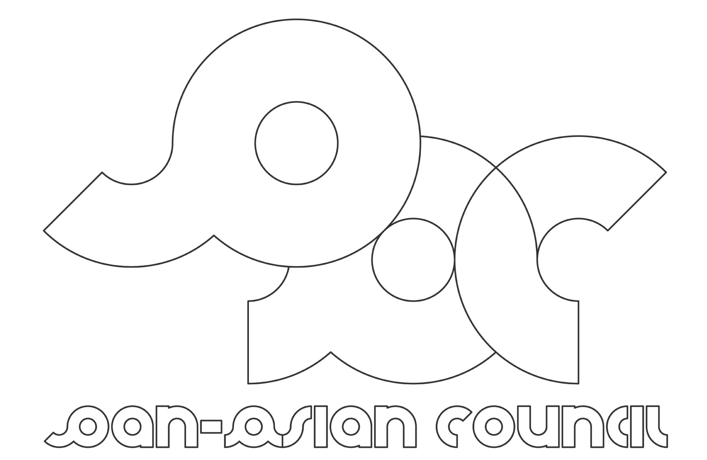
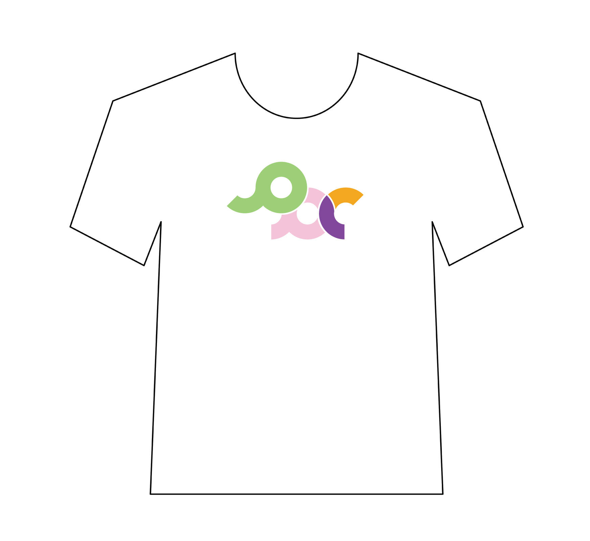
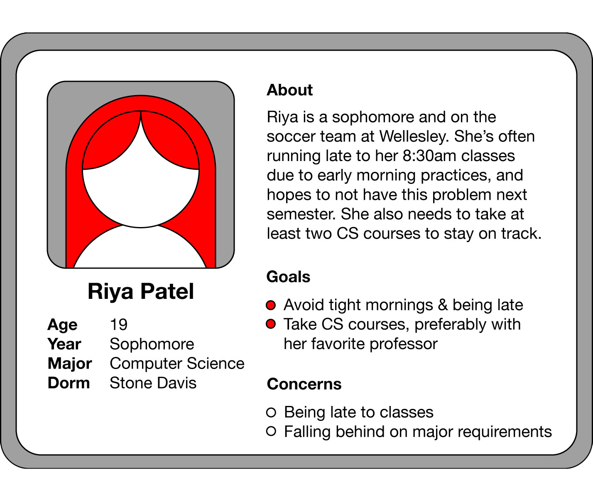
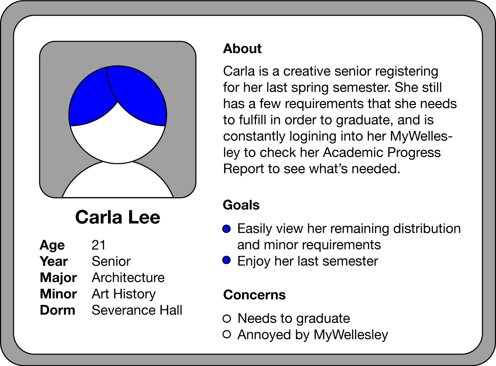
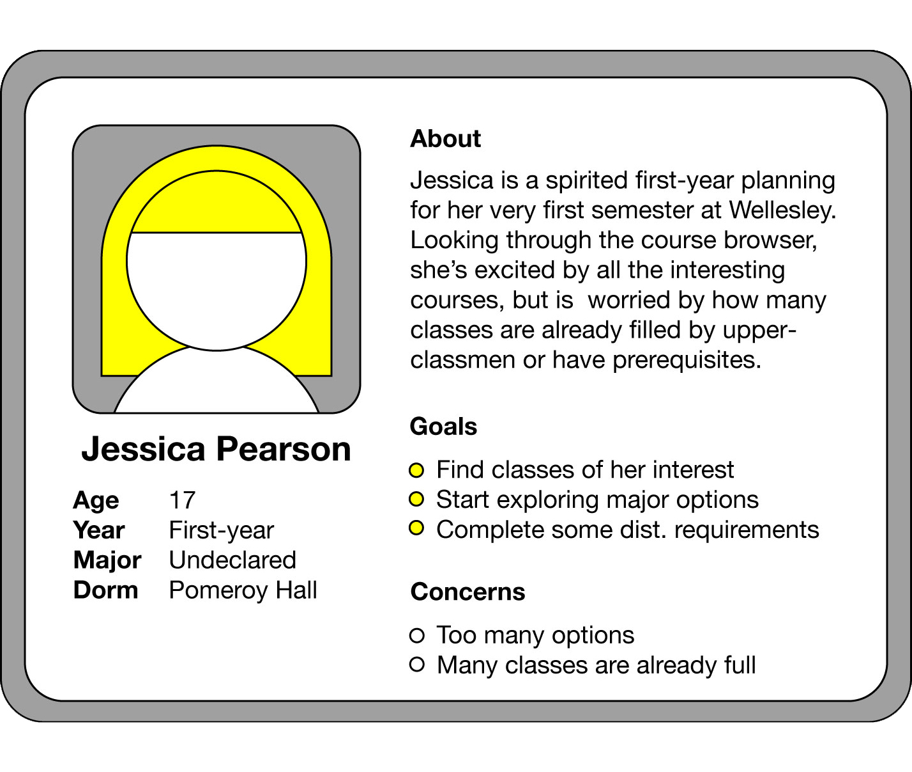
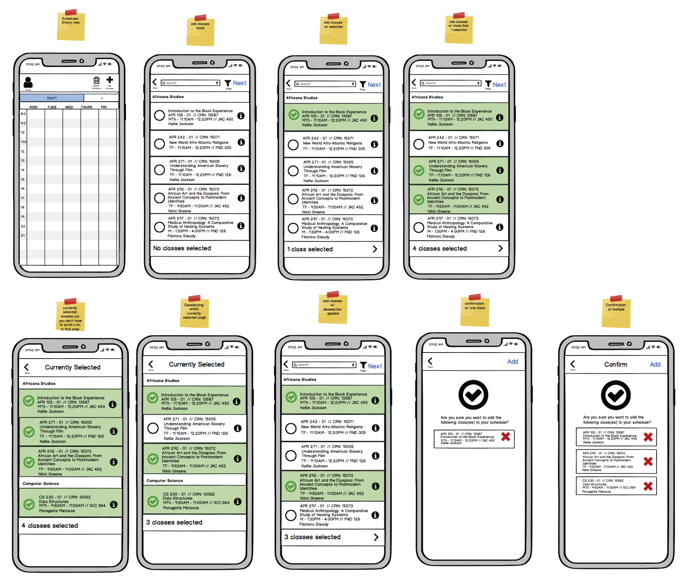
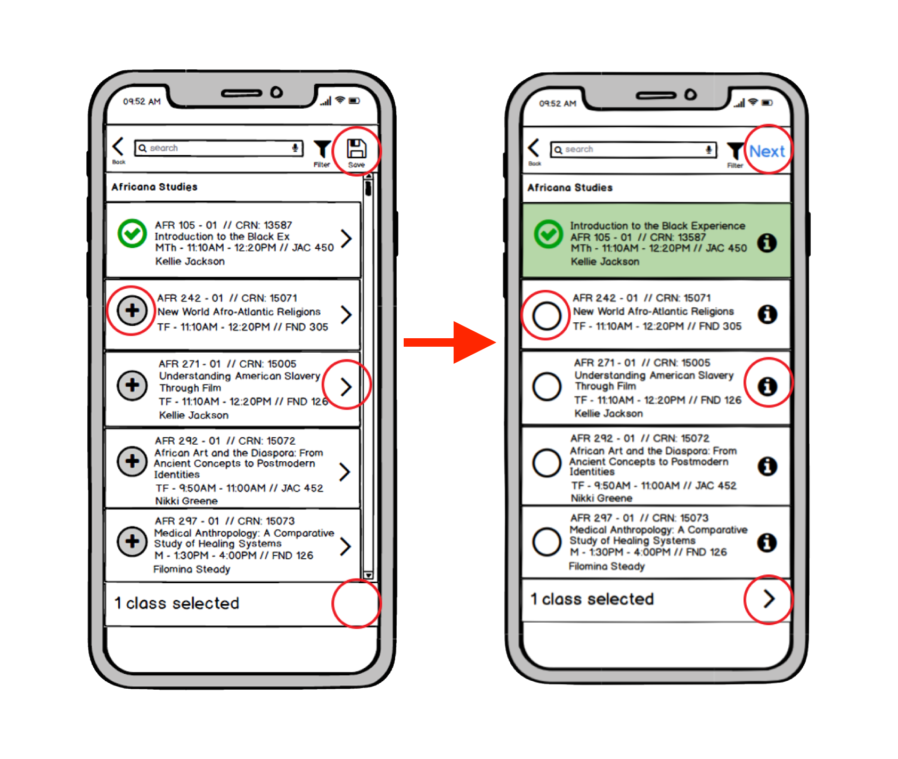
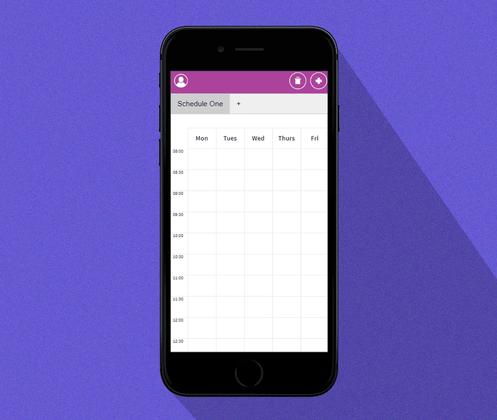
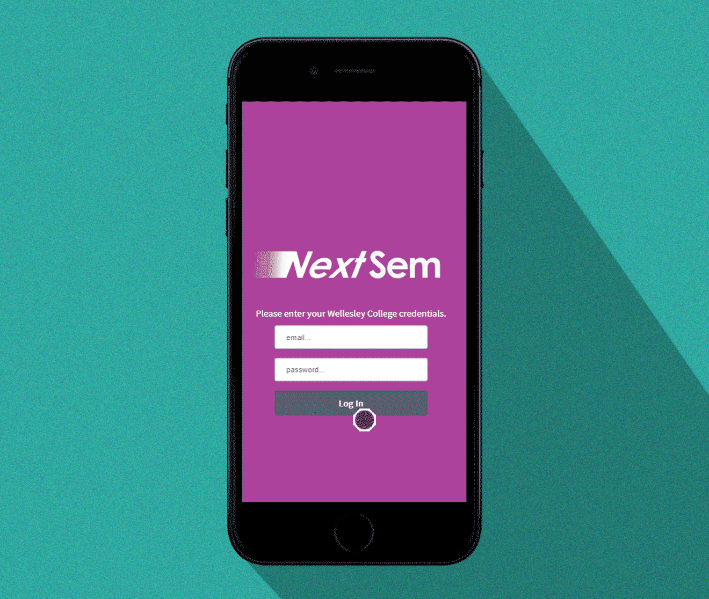
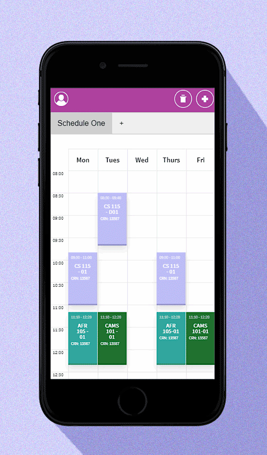

Joyce Florist
is an Asian-immigrant-owned flower shop that has been providing floral arrangements and houseplants for loved ones in Tenafly, NJ and surrounding areas since 2000.
This project consists of an updated typographic logo, awning, business card, packaging stickers, and Instagram account. This new identity is built to affirm this small business's lasting quality in flowers, relationship with its customers, and presence within its local community.


PAC
is Wellesley's Pan-Asian Council; a student cultural org that oversees and works with all 16 AAPI cultural organizations on campus. As an "umbrella" org, it promotes awareness and care towards issues pertinent to students of Asian descent through facilitating leadership meetings, organizing community-building trainings, hosting open discussions, and collaborating with other orgs.
Due to this org's unique membership being made up of representatives of AAPI student orgs, it constantly seeks ways to further visibility amongst the general student body. This interlocking monogram logo was designed to tie a strong visual identity to its accustomed acronym and pays a cheeky homage to the org's curiously prevailing elephant emblem.
UI/UX, Tablet Interface Design
CLEVR
stands for The Collaborative Learning Experiences in Virtual Reality; an interactive educational two-player game designed to help high school students learn cell biology using immersive 3DVR. The project examines the influence of new technologies and game-based approaches in education. How can XR (cross/extended reality) aid in expanding a student's conception of a cell - something so abstract yet also so fundamental and material?
New research findings and biweekly user testings would inform new functions in the game, resulting in regular revitalizations of buttons and their behaviors. The tablet interface was designed to render cohesiveness and ease, as it holds much academic information, to complement its visually-whelmed VR counterpart.
Team: Darius Bopp, Therese Mills, Katharina Gschwind, Temi Taylor, Femi Oladipupo, Valeria Yang
 Full navigator (tablet) tutorial available here.
Full navigator (tablet) tutorial available here.
ㅓ
ㅏ

A. User Personas

A. User Personas

A. User Personas

B. Wireframes, Iteration 1; Balsamiq

B. Wireframes, Iteration 2; User Testing, Balsamiq

C. Final Prototype; HTML/CSS

C. Final Prototype; HTML/CSS
NextSem
is a mobile application designed for a Human-Computer Interaction course at Wellesley College. At the heart of this project is a desire to provide ease and empowerment for Wellesley students planning for their undergrad careers.
Enough time and energy is spent mulling over prospective courses and major/distribution requirements without having to also navigate disjointed platforms. Students are often left to singly balance interests and needs on external support such as excel sheets, written notes, and schedule apps. NextSem offers a consolidated information readily available and tailored to each Wellesley student. All to provide high-quality support, convenience, and experience as they plan for future semesters.
Team: Christina Chen, Hiya Vazirani

Wireframing tools used throughout the prototyping
 A. Photo Book; Dimensions A4; 12 pages
A. Photo Book; Dimensions A4; 12 pages
Assorted Design Projects
: Curated photo books holding some favorites sifted out of my ever-growing digital photo abyss, conceptually driven design explorations, reflections on film, etc. **Update in progress**